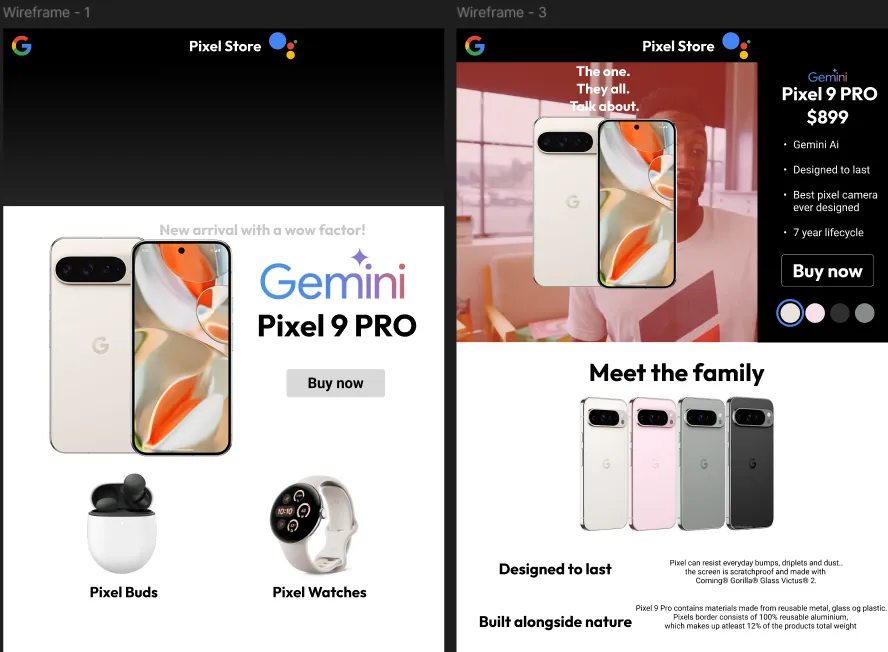
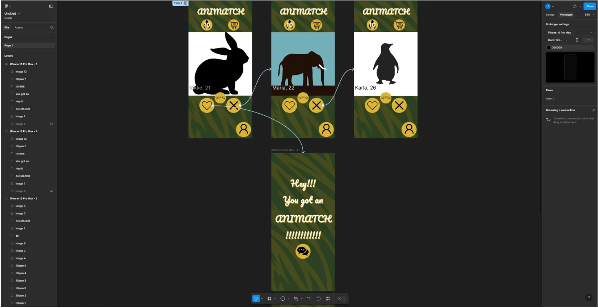
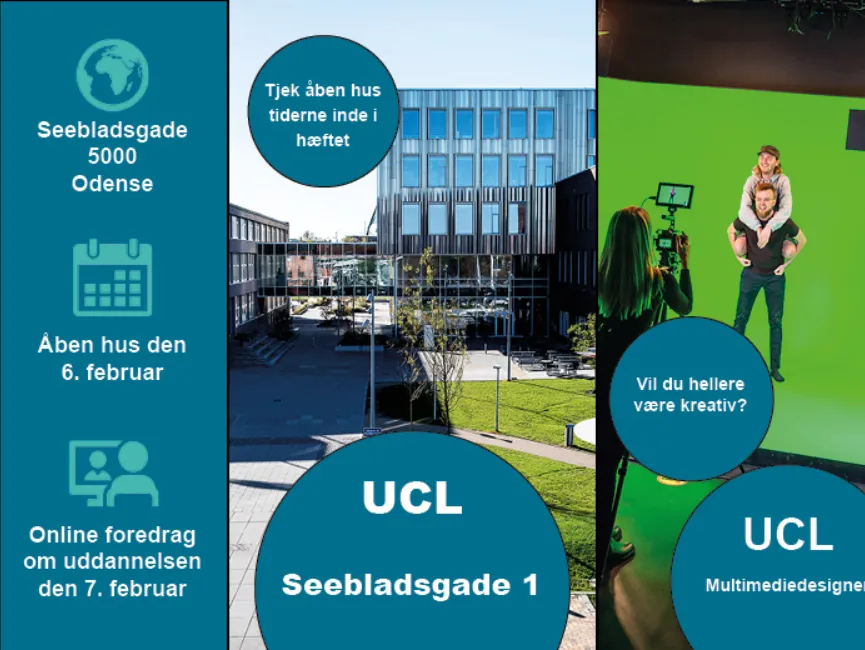
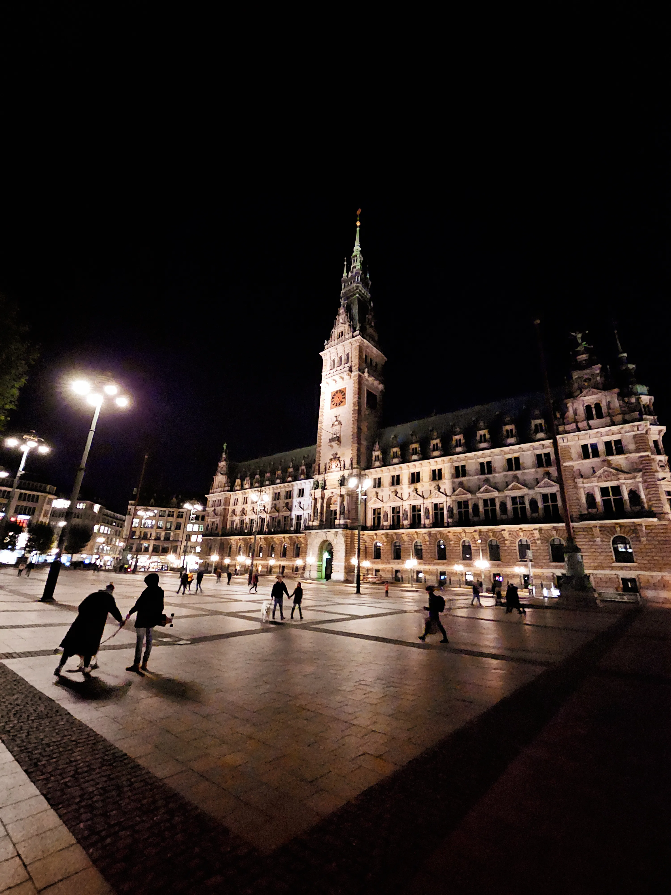

My projects
Although i am only on first semester, i have throughout my life made vastly different projects which can be linked as work by using multimedia tools
Pixel store redesign
Sticking with the google formula, i took their pixel store and redesigned it using the same design language i used creating this website.
Animation / CSS
We had a workshop where we learned how to do animation in css. I created this little guy who checks if the coast is clear and then puts on a pair of sunglasses and gets out a drink.
Moving art
We had another workshop where we learned how to make moving art, we had to pick an oilpainting, and learning how to make elements move.

Dating app prototype
Back with creating something in figma, we had to make a working prototype in figma where i made animatch, which is an anonymous Dating app where you pick you favourite animal and then match with people who also have picked their favourite animal.
Flyer about UCL
In this workshop we learned how to use indesign, we had to create a flyer to potential multimediadesign students
Photo editing
The class and i had a trip down to Hamburg, we had a photo assignment where we had to take pictures around the city and edit them using lightroom. Here is a photo of the town hall square where i added some bloom and warmer effects to give it a more welcoming atmosphere.
